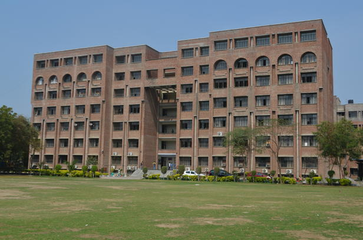

Information Technology
Information Technology is most prominent and rapidly developing field in todays world. To maintain speed with latest trends in Information Technology industry, our Information Technology department is fully empowered. Our fully air-conditioned laboratories contain sufficient number of computer systems with latest hardware and software configuration. Since IT is composed of data processing and transmission, we are having latest communication hardware and software with proper multimedia support to each system. A very high speed internet connection is there in the labs. Net surfing is provided to the students as per their requirements. Guest faculty specialized in respective fields of Information Technology are invited from time to time to keep students in touch with latest trends in technology and to broaden their spectrum of knowledge. All facilities in the labs are continuously examined and upgraded whenever required. The department has well qualified and experienced faculty for guiding students in right direction. Our aim here is to expose students to latest and growing technologies which help them to become highly skilled IT professional.
VISION
To build a culture of innovation and research in students and make them ready to solve upcoming challenges of human life using computing.
MISSION
M1 :To develop 'educational pathways' so that students can take their career towards success.
M2 :To imbibe curiosity and support innovativeness by providing guidance to use the technology effectively.
M3 :To inculcate management skills, integrity and honesty through curricular, co-curricular and extra-curricular.